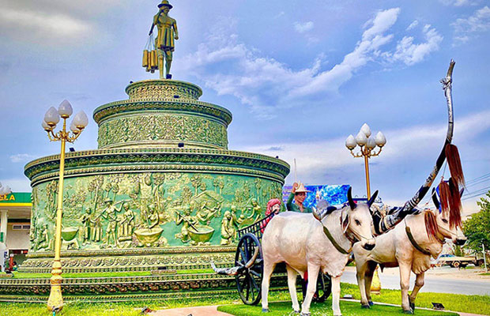
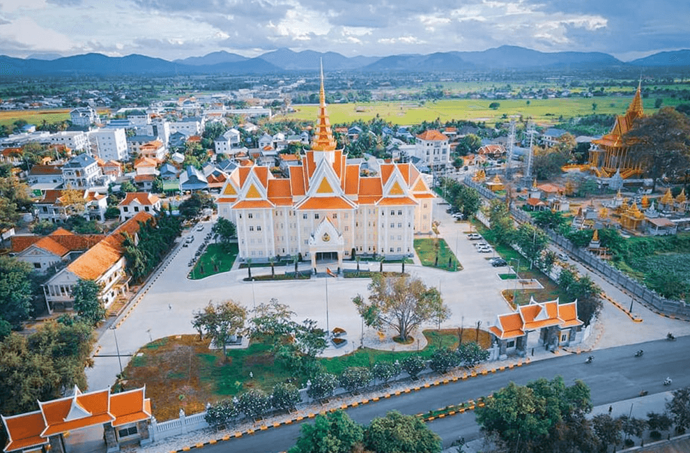

  Kampong Speu (Khmer: កំពង់ស្ពឺ, Kâmpóng Spœ [kɑmpɔŋ spɨː]; lit. 'Port of Starfruit') is a province of Cambodia. It borders the provinces of Pursat and Kampong Chhnang to the north, Kandal to the east, Takéo to the southeast, Kampot to the south and Koh Kong to the west. Its capital is the town of Chbar Mon.
Kampong Speu in Khmer means "starfruit port" or "starfruit harbor". In Khmer, kampong is a place-name element, meaning "port" or "harbor". It derives from the Austronesian language, Malay, in which it means "village". Speu in the Khmer language means "starfruit".
The province is subdivided into 7 districts and 1 municipality, further divided into 87 communes.
| ISO code | District | Khmer | Population (2019) |
|---|---|---|---|
| 05-01 | Basedth | ស្រុកបរសេដ្ឋ | 136,971 |
| 05-02 | Kong Pisei | ស្រុកគងពិសី | 145,476 |
| 05-03 | Chbar Mon Municipality | ក្រុងច្បារមន | 50,359 |
| 05-04 | Aoral | ស្រុកឱរ៉ាល់ | 39,544 |
| 05-05 | Oudong Municipality | ក្រុងឧដុង្គ | 145,311 |
| 05-07 | Samraong Tong | ស្រុកសំរោងទង | 182,774 |
| 05-08 | Thpong | ស្រុកថ្ពង | 63,328 |
The Wing Star Shoes factory in Kampong Speu province manufactures Asics sports shoes. It collapsed in 2013.[3] Three people were killed.[4] Workers struck at the Wing Star Shoes Factory in 2014, blocking National Route 3, and demanding a $5 raise in bonuses and enforcement of labor laws.[5] In 2016 and 2018, mass faintings of workers were reported. The cause in 2016, initially attributed to a worker having been possessed by a "spirit," was later revised to "poor health and imagination."[6] 2018, police reported that after a worker had a seizure, her "scream caused a mass panic, prompting workers to run, feel dizzy and faint."[7]
The state religion is Theravada Buddhism. More than 99.8% of the people in Kampong Speu are Buddhists, It's the most Buddhist province of the country. Chams have been practicing Islam for hundreds of years. A small percentage follow Christianity.
Phnom Aural is the tallest peak in Cambodia. It is 1,813 meters tall (other sources give elevations between 1,771 and 1,667 meters). It is in the eastern part of the Cardamom Mountains. To protect the biodiversity of the mountains, Phnom Aural Wildlife Sanctuary was established. This mountain located in Aoral District, Kampong Speu province.